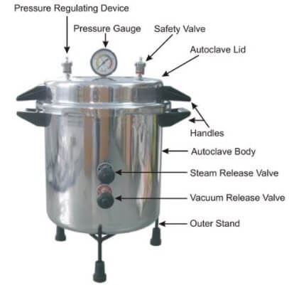

Anatomy

Chamber: The chamber is the main part of the autoclave where the items to be sterilized are placed. It is usually made of stainless steel and can range in size from small tabletop models to large industrial models.
Door:The door is the part of the autoclave that seals the chamber during sterilization. It is usually made of stainless steel and has a locking mechanism to prevent accidental opening during operation.
Control panel:The control panel is the interface for operating the autoclave. It may include digital displays, buttons, and knobs for setting the sterilization cycle parameters, such as temperature, pressure, and cycle time.
Steam generator: The steam generator is the part of the autoclave that produces steam. It is typically located outside the chamber and is connected to the chamber by a steam line.
Pressure gauge:The pressure gauge is a device that measures the pressure inside the autoclave chamber. It helps ensure that the correct pressure is maintained during the sterilization cycle.
Safety valve:The safety valve is a critical safety feature that prevents the autoclave from exceeding its maximum pressure limit. If the pressure inside the chamber becomes too high, the safety valve opens, releasing steam and reducing the pressure.
Drain valve:The drain valve is used to remove the condensate that accumulates inside the autoclave chamber during the sterilization cycle.
Power source:The autoclave device requires a power source to operate, usually in the form of electricity or gas.
Working
The basic working principle of an autoclave involves the use of heat and pressure to kill microorganisms.
When the items to be sterilized are placed inside the autoclave chamber, steam is generated by heating water in a separate chamber.
The steam is then introduced into the main chamber, where it raises the temperature and pressure to a level that is lethal to most microorganisms.
The autoclave usually has a control system that allows the operator to set the desired temperature and pressure, as well as the
duration of the sterilization cycle. Once the sterilization cycle is complete, the steam is allowed to escape, and the chamber is depressurized.
It is important to note that not all materials can be sterilized using an autoclave, as some materials may be damaged or destroyed by the
high temperatures and pressure. Therefore, it is important to follow the manufacturer's instructions and guidelines when using an autoclave.
 The autoclave was invented by Charles Chamberland in 1879, although a precursor known as the steam digester was created by Denis Papin in 1679. The name comes from Greek auto-, ultimately meaning self, and Latin clavis meaning key, thus a self-locking device.
An autoclave is a device used for sterilizing medical equipment, laboratory instruments, and other items using high-pressure steam and used to carry out industrial and scientific processes requiring elevated temperature and pressure in relation to
ambient pressure and/or temperature. Autoclaves are used before surgical procedures to perform sterilization and in the chemical industry to
cure coatings and vulcanize rubber and for hydrothermal synthesis. Industrial autoclaves are used in industrial applications, especially in the manufacturing of composites.
The autoclave was invented by Charles Chamberland in 1879, although a precursor known as the steam digester was created by Denis Papin in 1679. The name comes from Greek auto-, ultimately meaning self, and Latin clavis meaning key, thus a self-locking device.
An autoclave is a device used for sterilizing medical equipment, laboratory instruments, and other items using high-pressure steam and used to carry out industrial and scientific processes requiring elevated temperature and pressure in relation to
ambient pressure and/or temperature. Autoclaves are used before surgical procedures to perform sterilization and in the chemical industry to
cure coatings and vulcanize rubber and for hydrothermal synthesis. Industrial autoclaves are used in industrial applications, especially in the manufacturing of composites.